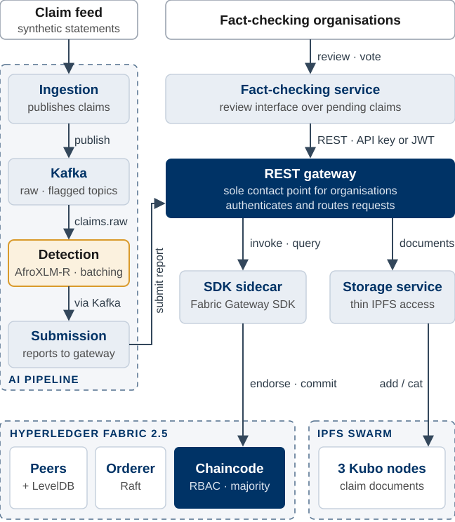
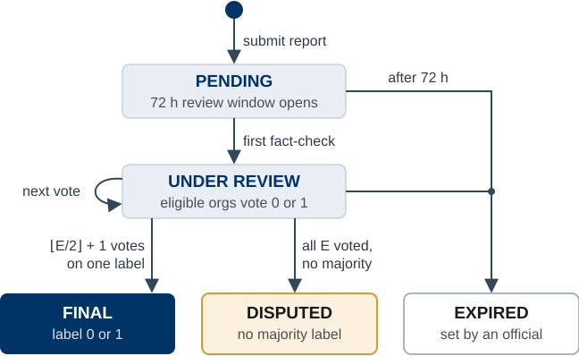

1. Introduction
In South Africa's 2024 election, AI deepfakes spread through WhatsApp groups and fact-checks were dismissed as propaganda [1]. Fact-checkers keep separate records, and detection tools rarely cover African languages:
2. Methodology
No Sepedi or isiZulu election corpus existed, so Gemini 3.6 Flash wrote paired true and false statements, machine-translated from English.
3. System architecture
A permissioned Hyperledger Fabric consortium [5] with Raft ordering: no fees, deterministic finality, and roles enforced inside chaincode from X.509 certificate attributes.

4. Results
5. Report lifecycle

6. Conclusion
An Afrocentric encoder trained on translated synthetic data detects misinformation in Sepedi and isiZulu close to English; a Fabric consortium records joint verdicts tamper-evidently.
Next steps: real election posts, a multi-host deployment, a stakeholder web interface and per-user identities.
Acknowledgements: we thank our supervisors, Dr. S Rananga and Mr. N Rananga, and the DSFSI Research Group, University of Pretoria.